Controlling high blood pressure will save millions of lives
Hypertension kills more people than any other condition. Approximately 10 million people die each year, more than from all infectious diseases combined. Reducing blood pressure prevents stroke, heart attack, kidney damage, and other health problems.
{kind=link}
An estimated 1.4 billion people worldwide have high blood pressure, but just 1 in 7 people have it under control. Health providers in high- and low-income countries, urban and rural areas, and across different health systems show it can be done. Canada has reached nearly 70% control nationwide, and Barbados and Malawi have shown it is possible to increase control rates rapidly.
Increasing global control of blood pressure from the current 14 percent to 50 percent, reducing global dietary sodium intake by 30 percent, and eliminating artificial trans fats from foods would prevent more than 100 million deaths from heart disease over the next 30 years. The global health care savings from effective management of blood pressure alone have been estimated at $100 billion per year.
Our approach
We believe in speed, simplicity, and scale. We work with global, national and local partners to help scale up proven strategies to improve control of high blood pressure, including:
SIMPLE, PROVEN TREATMENT PROTOCOLS
Practical treatment protocols with specific medications, dosages, and steps to take if blood pressure is not controlled can streamline care and improve adherence.
COMMUNITY-BASED CARE AND TASK SHARING
Patients benefit when clinics expand the number of health workers who can provide, adjust and intensify medication regimens per physician orders and protocols.
ENSURE SUPPLY OF MEDICATIONS
It is critical to get the right medications to the right place at the right time to reach the patients who need them. Regular and uninterrupted medications is necessary for treatment.
PATIENT-CENTERED CARE
Patient-centered care can reduce barriers to controlling blood pressure. Strategies include easy-to-take medicine regimens, free medications and follow up visits, and readily available blood pressure monitoring.
INFORMATION SYSTEMS
We are leveraging technology to develop information systems that allow for continuous, real-time program improvement. Effective technology can help determine how patients and providers are doing and catalyze rapid improvements.
What we're doing
The World Health Organization (WHO) has created the global HEARTS protocol to bring a consistent, proven treatment methodology for hypertensive patients. Countries are choosing the appropriate protocol from the HEARTS technical package. There are a lot of factors that need to align to practically get these programs off the ground and to make them effective — we are helping countries to make it happen.
The Government of India and the state of Punjab were the first places to implement the protocol. Starting in January 2018, all adult patients are having their blood pressures taken and doctors have been trained to follow an easy-to-follow treatment algorithm.
{kind=link}
{kind=link}
{kind=link}
Systems for Monitoring
The "S" in HEARTS stands for "Systems for monitoring." We are supporting monitoring systems to improve the efficacy of hypertension treatment projects. Resolve to Save Lives is guiding the Simple.org project to build a focused tool for healthcare workers to monitor their high blood pressure patients over time. We are also building dashboards to help administrators to oversee their programs in close to real time. And, our informatics experts help countries to integrate their systems effectively so leaders can get on the same page.
Resources
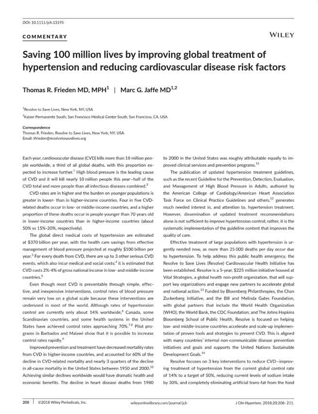 Saving 100 million lives by improving global treatment of hypertension and reducing cardiovascular disease risk factors: Frieden and Jaffe 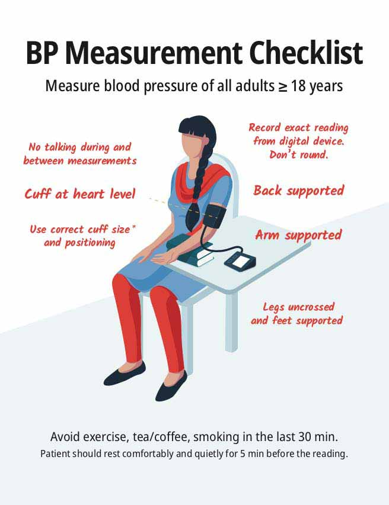 Poster: BP Measurement Checklist (Public domain PDF) 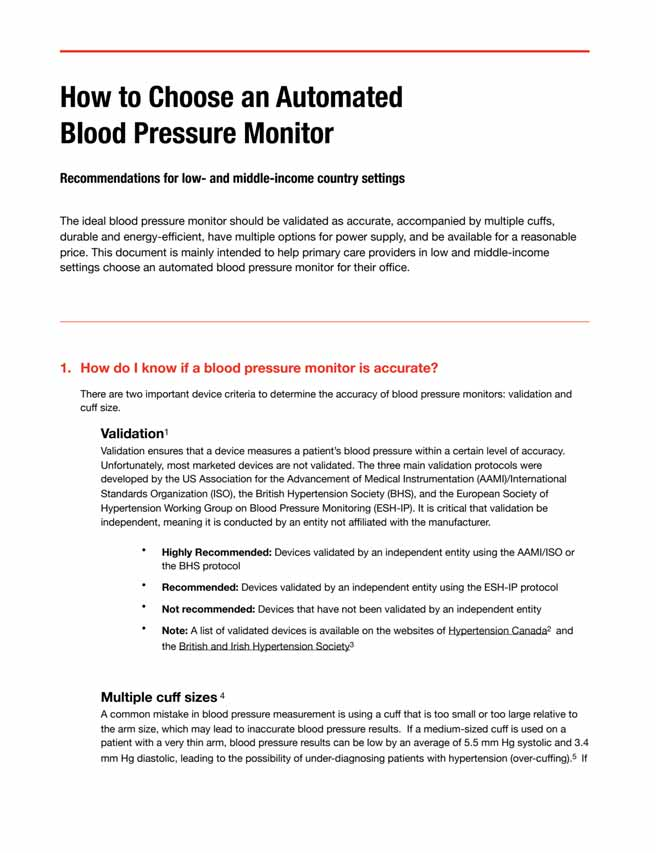 How to Choose an Automated Blood Pressure Monitor (Public domain PDF) Hypertension control: An annotated bibliography 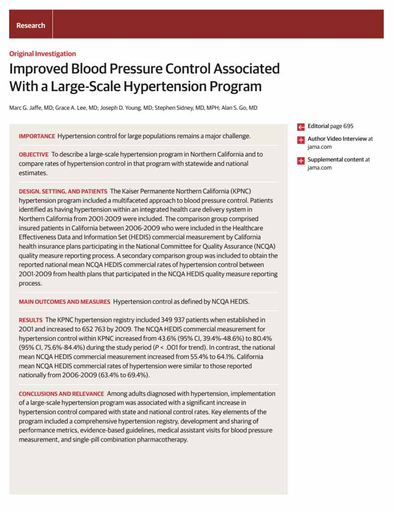 Improved BP Control Associated with a Large-scale Hypertension Program: Marc Jaffe et al 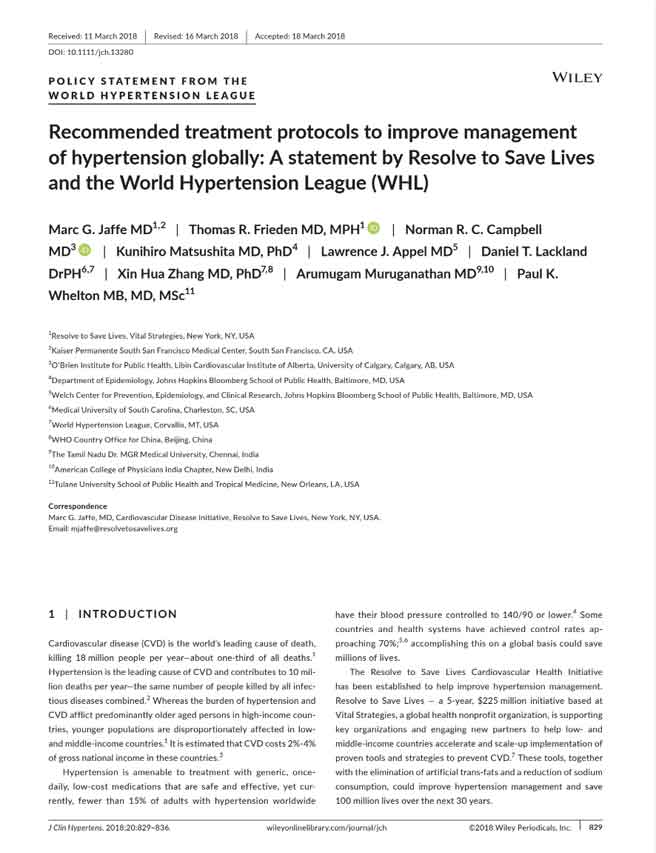 Policy Statement from the World Hypertension League Example Hypertension Protocol: Punjab
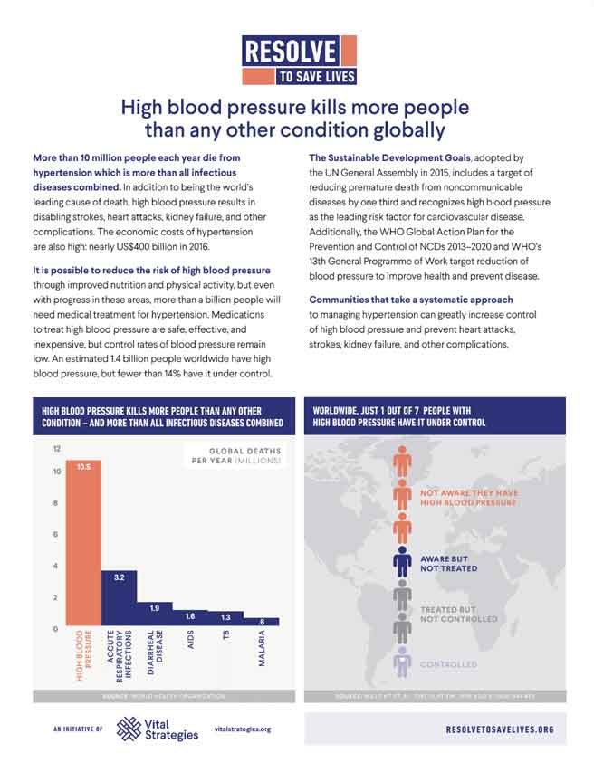 Resolve to Save Lives: Hypertension Fact Sheet
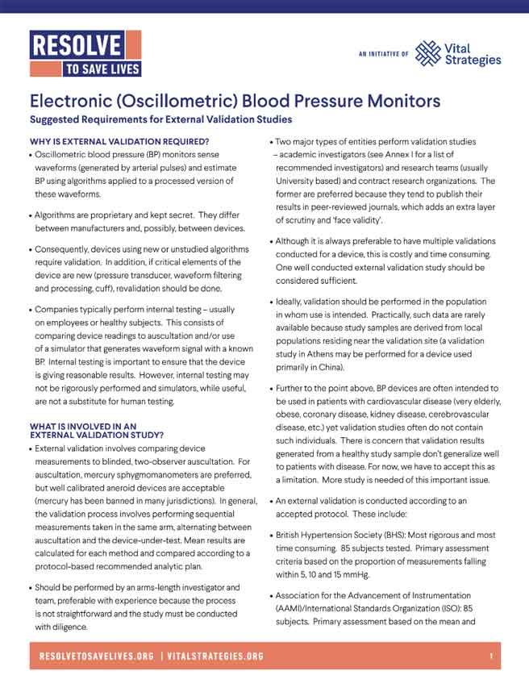 Suggested Requirements for External Validation Studies of Blood Pressure Monitors
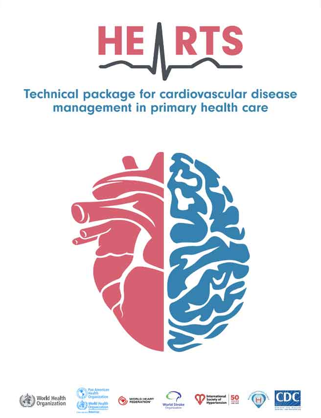 WHO HEARTS Technical Package
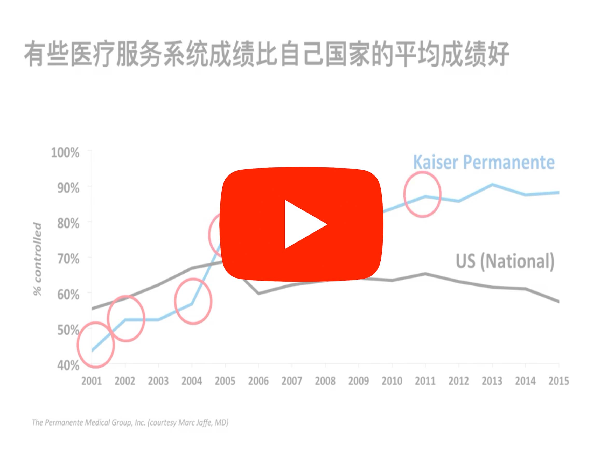 Video: Preventing Cardiovascular Disease, China’s Leading Killer
Example Hypertension Protocol: Punjab
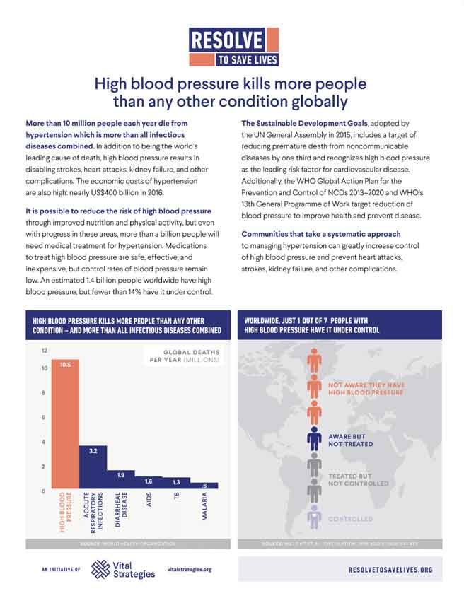 Resolve to Save Lives: Hypertension Fact Sheet
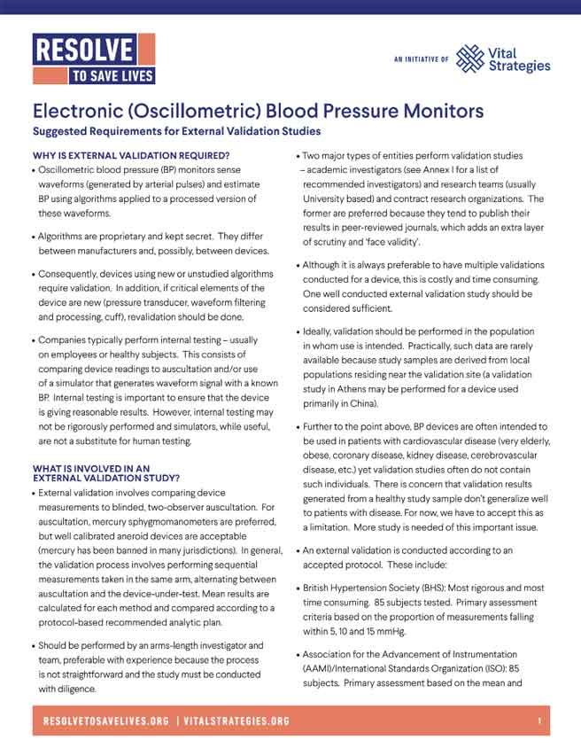 Suggested Requirements for External Validation Studies of Blood Pressure Monitors
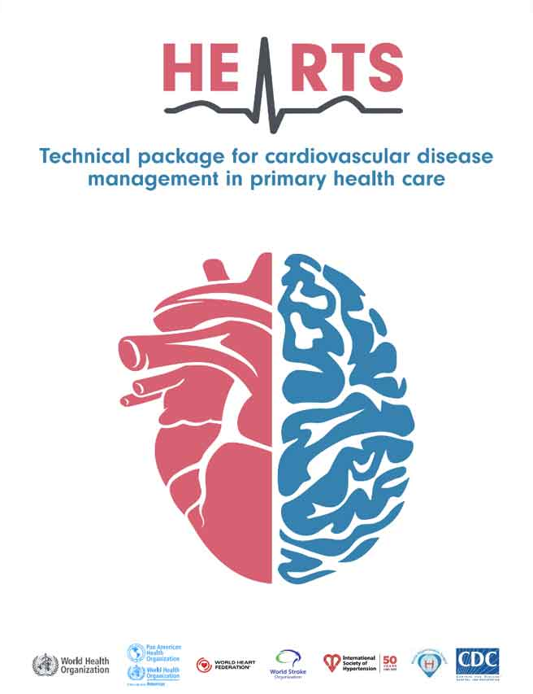 WHO HEARTS Technical Package
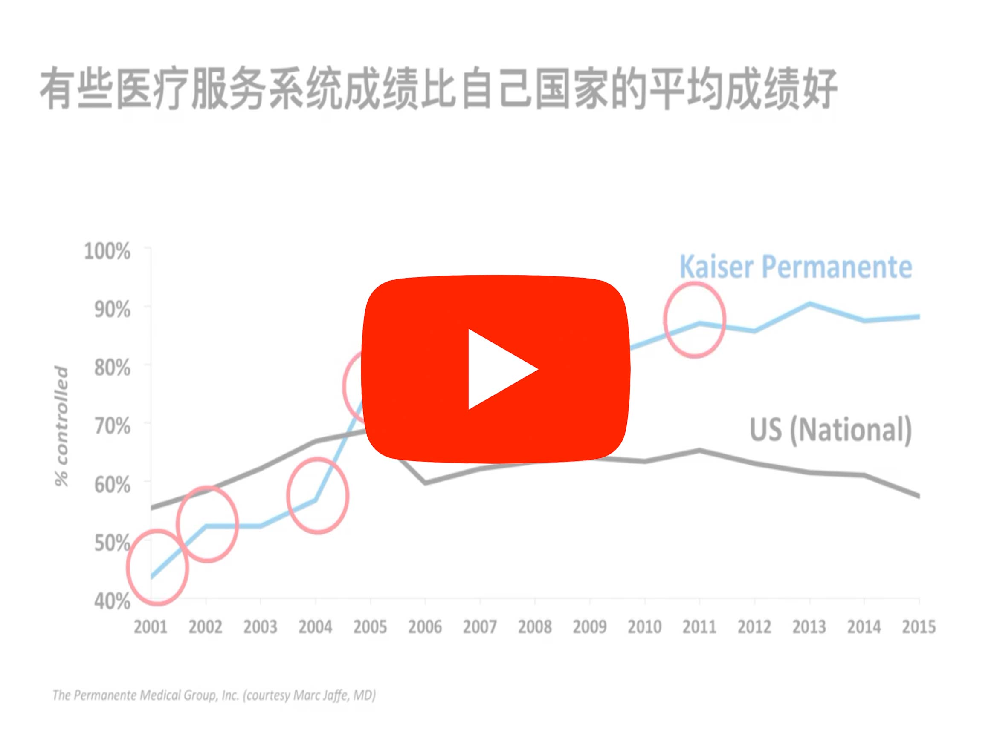 Video: Preventing Cardiovascular Disease, China’s Leading Killer